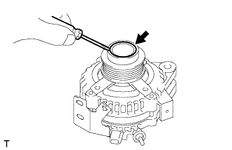
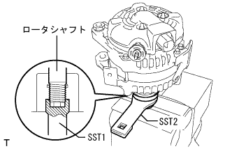
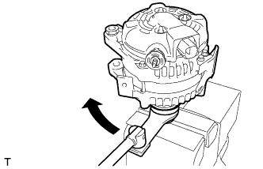
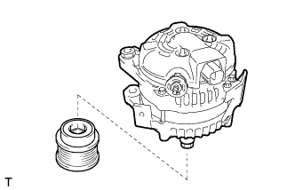
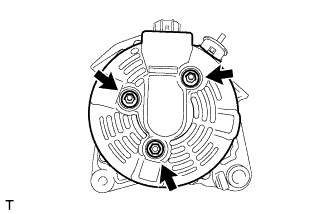
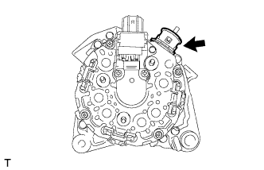
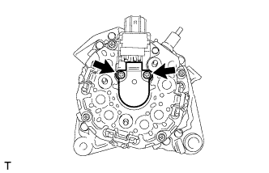
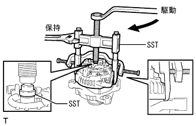
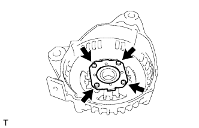
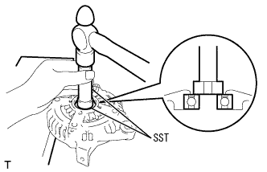

Alternator Assembly (2AZ-FE) Disassembly |
| 1. Remove Alternator Pulley (w/ Clutch) |
 |
Using a small screwdriver, remove the alternator pulley cap from the alternator pulley with clutch.
 |
Install SST1 to SST2.
Secure the width across flats of SST1 in a vise.
 |
Install SST1 to the end of the alternator rotor shaft.
 |
Install SST2 to the alternator pulley with clutch.
 |
Turn SST2 clockwise to loosen it, and remove the alternator pulley with clutch from the alternator assembly.
| 2. Remove Alternator Rear End Cover |
 |
Place the alternator assembly on the alternator pulley with clutch.
 |
Remove the 3 nuts and remove the rear end cover from the alternator coil.
| 3. Remove Terminal Insulator |
 |
Remove the terminal insulator.
| 4. Remove Alternator Brush Holder Assembly |
 |
Remove the 2 screws and remove the brush holder from the alternator coil.
| 5. Remove Alternator Coil Assembly |
 |
Remove the 4 through bolts.
 |
Remove the bolt and remove the cord clip.
 |
Using SST, remove the alternator coil.
| 6. Remove Alternator Rotor Assembly |
 |
Remove the alternator washer.
 |
Remove the alternator rotor from the alternator drive end frame assembly.
| 7. Remove Alternator Drive End Frame Bearing |
 |
Remove the 4 screws and remove the retainer plate from the alternator drive end frame assembly.
 |
Using SST, remove the alternator drive end frame bearing from the alternator drive end frame assembly.